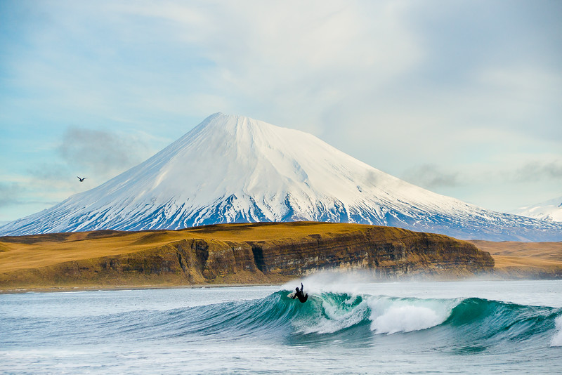
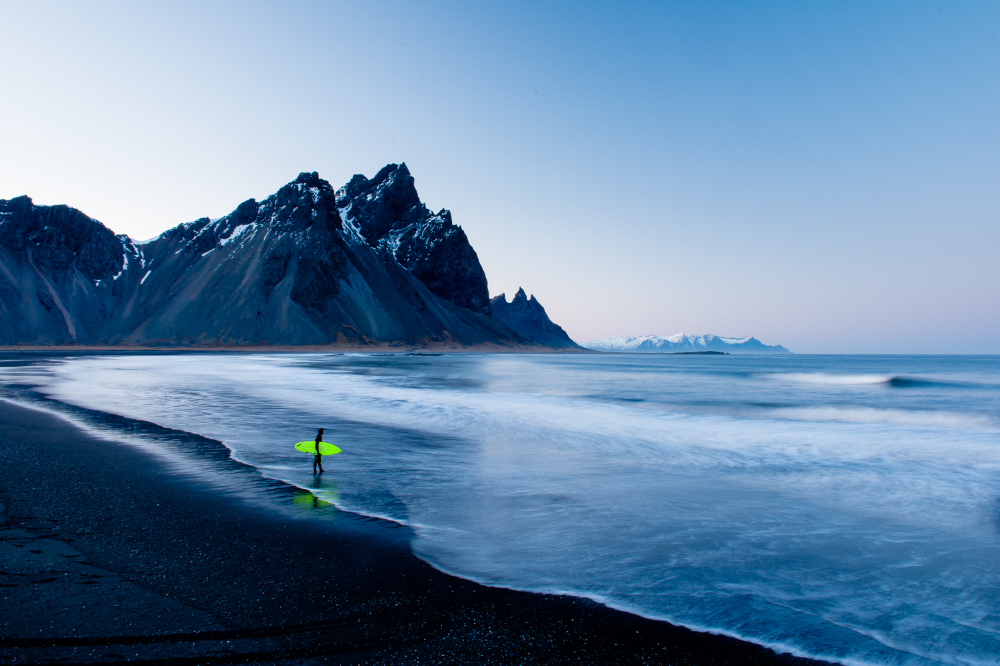
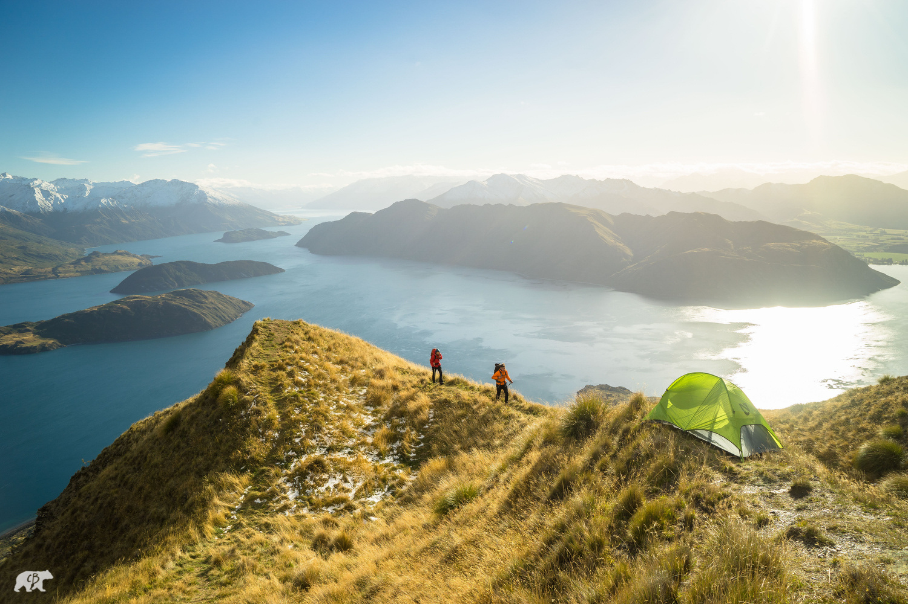
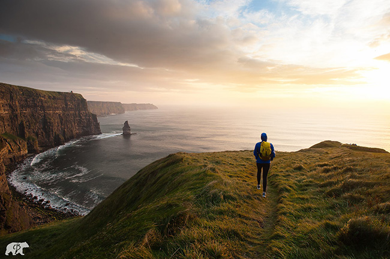
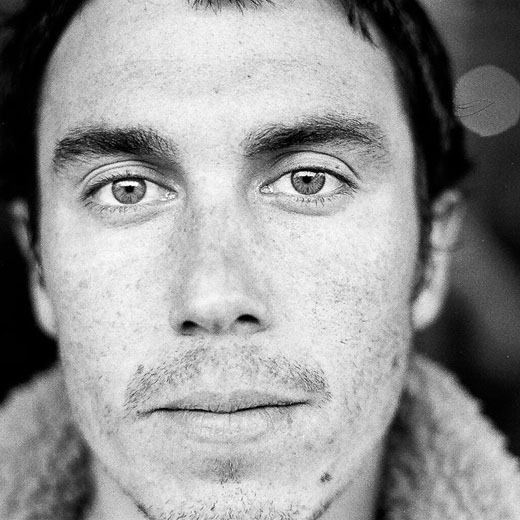
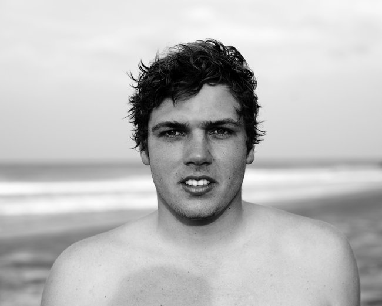
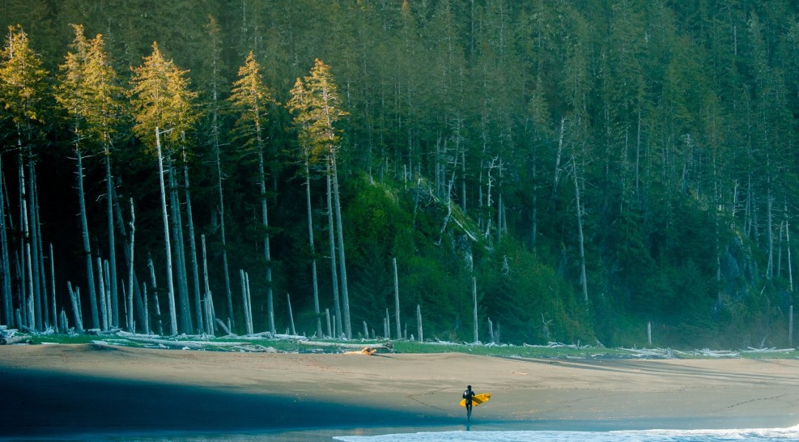
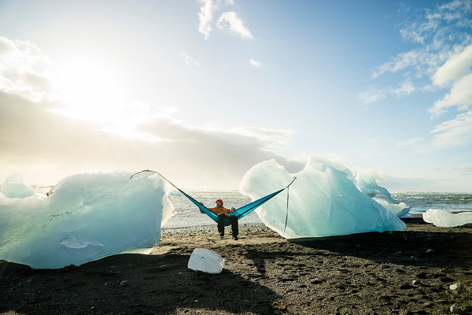

Chris Burkard
Chris Burkard is an accomplished explorer, photographer, creative director, speaker, and author. Traveling throughout the year to pursue the farthest expanses of Earth, Burkard works to capture stories that inspire humans to consider their relationship with nature, while promoting the preservation of wild places everywhere.
Layered by outdoor, travel, adventure, surf, and lifestyle subjects, Burkard is known for images that are punctuated by untamed, powerful landscapes. Through social media chris strives to share his vision of wild places with millions of people, and to inspire them to explore for themselves.
Opinions
Chris is a fantastic photographer. The way he captures moments is magical, and he is one of the reasons why I fell in love with photography at the first place.
Best inspiration you can get !!! Love it ! Because of him I traveled to Iceland in 2014 and fell in love with this country and the northern countries in general. In 2016 I was in Norway, a stunning roadtrip with friends. Thank you Chris! Cannot wait to see you in person in Munich at 4th September.
Connections
Morgan Maassen

